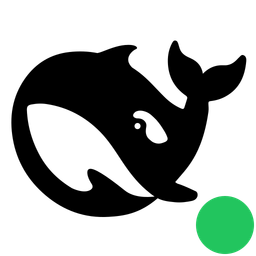

特性 Features
🩺
一键体检
Node.js / npm 镜像 / dsh 三项状态自动检测，缺失项一键修复，全程限时不卡界面。
🚀
DSH 启停
托盘一键启动/停止/重启 Web UI，自动解析实际 URL 并打开浏览器，随机端口也准确。
🌐
双语界面
自动识别系统语言（中文 / English），设置页可随时手动切换，立即生效。
🛡️
启动预检
端口占用检测 + 外部 dsh 实例扫描，防止双实例并发写坏会话数据。
🧹
安全清理
一键清理 dsh 环境：数据目录备份为 .dsh.bak 而非删除，可随时恢复。
🖥️
轻量免装
.NET Framework 4.6.2 系统自带，绿色单 exe，无需管理员权限，退出自动停 dsh。
🔔
通知增强
每轮回答结束通过托盘通知你；可选子代理通知、外部命令，并支持一键安装/更新/卸载 dsh 插件。
🖱️
托盘自定义
双击托盘图标可设为打开主面板或直接打开 Web UI；也可让托盘启动后自动启动 DSH。
⚙️
自动启动 DSH
开启后，托盘程序一启动就自动拉起 dsh Web 服务，省去手动点“启动 DSH”。
四步上手 Get started
- 体检打开「环境」页一键体检，缺失的 Node.js / dsh 点按钮直接安装（支持 npm 镜像加速）。
- 启动「服务」页设置端口（或随机端口）→ 启动 DSH，浏览器自动打开 Web UI。
- 常驻托盘之后日常操作都在托盘：启动/停止/重启、复制 URL、退出（自动先停 dsh）。
- 通知增强（可选）在「通知增强」页安装/更新插件，开启每轮回答结束的托盘通知或外部命令。
应用图标 App icon
未运行

运行中（绿点）
环境要求 Requirements
- Windows 10 / 11（.NET Framework 4.6.2 系统自带）
- Node.js ≥ 18 —— 工具内可一键安装
- dsh —— 工具内可一键安装/更新